Weapons
43 entries
 Stick Stick | 0 | Warrior | 2–5 | No | 33 |
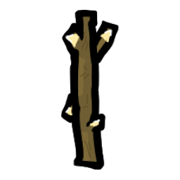 Thorn | 0 | Warrior | 5–9 | No | 110 |
| Wand | 0 | Mage | 4–9 | No | 33 |
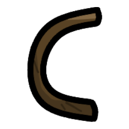 Bow | 1 | Archer | 2–4 | Yes | 33 |
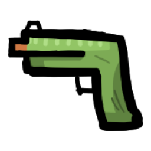 Water Gun | 1 | Cowboy | 1–3 | Yes | 33 |
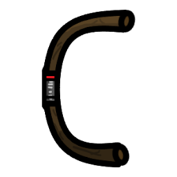 Medium Bow | 3 | Archer | 6–11 | Yes | 500 |
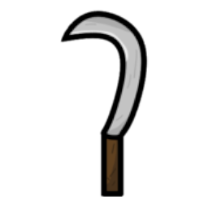 Sickle | 3 | Warrior | 10–17 | No | 500 |
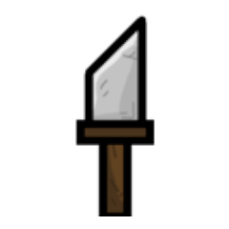 Butchers Dagger | 4 | Warrior | 12–16 | No | 470 |
| Flame Wand | 4 | Mage | 6–12 | No | 600 |
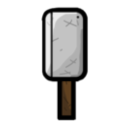 Cleaver | 5 | Warrior | 15–22 | No | 810 |
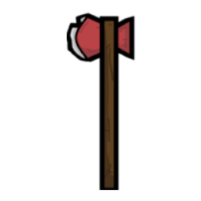 Firemen Axe | 7 | Warrior | 14–26 | No | 1,000 |
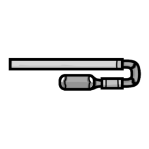 Potato Gun | 8 | Cowboy | 10–15 | Yes | 1,200 |
| Curved Bow | 9 | Archer | 16–23 | Yes | 2,000 |
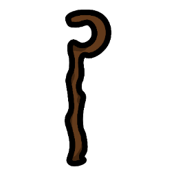 Wizzard Wand | 10 | Mage | 12–24 | No | 2,300 |
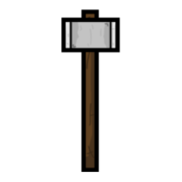 Sledge Hammer | 11 | Warrior | 21–46 | Yes | 2,800 |
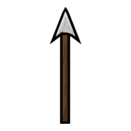 Fishing Spear | 14 | Warrior | 36–49 | Yes | 4,900 |
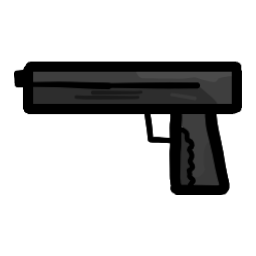 Handgun | 14 | Cowboy | 15–25 | No | 8,200 |
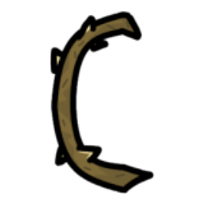 Thorn Bow | 14 | Archer | 35–49 | Yes | 5,600 |
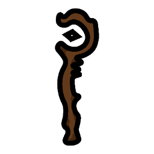 Diamond Wizzard Wand | 15 | Mage | 14–27 | No | 3,500 |
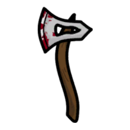 Bloody Hatchet | 19 | Warrior | 22–44 | No | 5,500 |
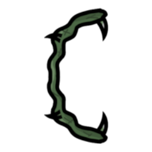 Green Thorn Bow | 19 | Archer | 41–58 | Yes | 11,500 |
| Nightingle Wand | 21 | Mage | 17–30 | No | 5,000 |
| Whole Sword | 21 | Warrior | 49–75 | Yes | 9,900 |
| Demon Bow | 25 | Archer | 47–66 | Yes | 16,000 |
| Heart Wand | 26 | Mage | 20–34 | No | 10,000 |
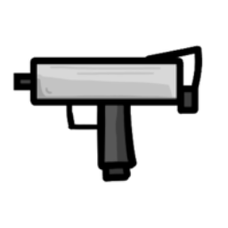 Mac10 | 26 | Cowboy | 14–17 | Yes | 41,000 |
| Red Gemstone Bow | 30 | Archer | 56–84 | Yes | 23,000 |
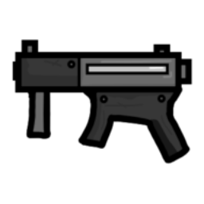 Mp7 | 31 | Cowboy | 21–27 | Yes | 25,000 |
| Red Mushroom Wand | 34 | Mage | 23–37 | No | 16,000 |
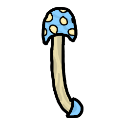 Blue Mushroom Wand | 36 | Mage | 25–40 | No | 20,000 |
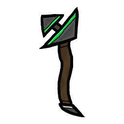 Radioactive Wand | 40 | Mage | 30–46 | No | 36,000 |
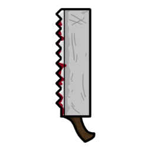 Sawtooth Blade | 40 | Warrior | 87–130 | Yes | 48,000 |
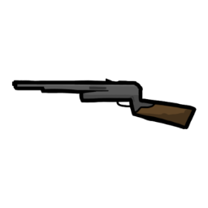 Shotgun | 40 | Cowboy | 57–78 | Yes | 41,000 |
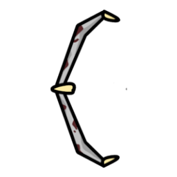 Golden Mechanical Bow | 43 | Archer | 62–90 | Yes | 45,000 |
| Sapphire Wand | 46 | Mage | 34–51 | No | 54,000 |
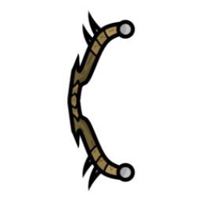 Cobra Bow | 48 | Archer | 74–103 | Yes | 55,000 |
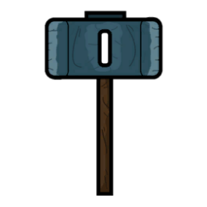 Warhammer | 49 | Warrior | 89–160 | Yes | 59,000 |
| Metal Block Bow | 54 | Archer | 84–113 | Yes | 88,000 |
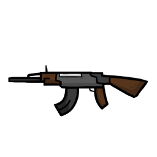 Ak47 | 55 | Cowboy | 38–48 | Yes | 115,000 |
| Golden Shard Wand | 55 | Mage | 38–56 | No | 80,000 |
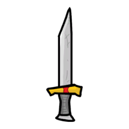 Guardians Blade | 56 | Warrior | 61–101 | No | 55,000 |
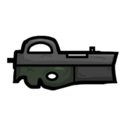 P90 | 58 | Cowboy | 25–32 | Yes | 100,000 |
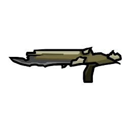 Skb | 395 | Cowboy | 160–210 | Yes | 3,167,500 |
No entries match these filters.
Worth is the base catalog value. Shop prices and sell prices appear on item pages.